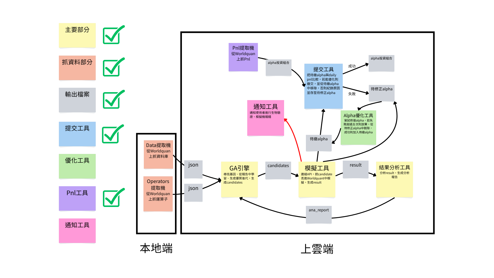
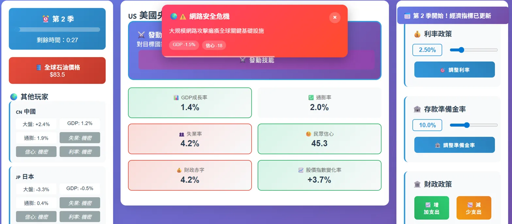

持續學習 · 精益求精 · 跨域創新
社會學系統計分析的啟蒙，第一次接觸數據分析的魅力。
理論與實務的初次碰撞，完成人生第一個金融實證分析。
從黑盒子到透明化，用Excel VBA實作Black-Scholes模型。
簡單策略慘敗，意識到量化交易需要更系統性的方法。
找到適合的研究方向，BNB-DOGE策略年化報酬53%。
初探Alpha因子，從手動嘗試到自動化搜索的轉變。
解決相關性過高問題，設計智能搜索策略。
自創演算法，實現汰弱留強，逐步提升搜索效率。
2000行代碼遷移上雲，實現24/7自動運行。
面對如何持續產出高品質Alpha的挑戰，我設計了一套完整的自動化解決方案，從數據採集到策略優化形成閉環系統。

WorldQuant Alpha自動化系統架構圖
爬蟲自動抓取WorldQuant數據集與操作符，智能過濾保留高實用性數據
遺傳算法自動探索Alpha空間，效率有質的提升
候選Alpha自動進入模擬系統，生成完整的績效報告
分析報告反饋至GA引擎，持續優化下一代Alpha生成策略
爬取所有Alpha的5年Daily PnL，只選擇能提升整體組合表現的Alpha
自動分析未達標原因，嘗試優化使其成為可提交的Alpha
成功開發Alpha數量
投資組合Sharpe Ratio
作為社會學系跨域到金融領域的學生，我深刻體會到貨幣銀行學等核心課程的學習痛點。與其死記硬背枯燥的理論，不如透過遊戲化的方式，讓學生在實戰中理解央行政策工具的運用。

政策工具
同時在線
央行博弈
突發事件系統
國家特色主、被動技能
參考真實經濟邏輯
目前已完成主要遊戲部份的設計，未來會完善遊玩體驗、設計評分系統、擴充更多央行角色與事件系統。並開始嘗試與大學商學院接洽，目標是將這個遊戲賣給大學，我的願景是讓這個遊戲成為未來每位商學院學生必備的學習工具。
期待與您深入交流各種合作可能